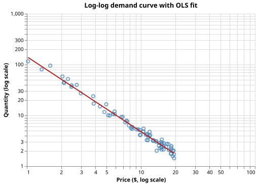

Estimating Price Elasticity of Demand
The Problem
- The price elasticity of demand measures how sensitive consumer demand is to price changes: it answers "if the price rises by 1%, how many fewer units are sold?"
- Formally:
$$\varepsilon = \frac{\partial \ln Q}{\partial \ln P} = \frac{P}{Q} \frac{dQ}{dP}$$
- $\varepsilon < -1$: demand is elastic — a 1% price increase causes more than a 1% drop in quantity.
- $-1 < \varepsilon < 0$: demand is inelastic — quantity is relatively insensitive to price.
- $\varepsilon = -1$: unit elastic — price and quantity move in equal and opposite proportions.
A product has estimated price elasticity $\varepsilon = -2.0$. If the price increases by 10%, what happens to quantity demanded?
- Quantity decreases by 2%.
- Wrong: elasticity multiplies the percentage change in price, not adds to it.
- Quantity decreases by 20%.
- Correct: $\Delta Q / Q \approx \varepsilon \times \Delta P / P = -2.0 \times 10\% = -20\%$.
- Quantity increases by 20% because supply adjusts.
- Wrong: price elasticity of demand describes consumer response, not supplier response.
- Quantity is unchanged because consumers need the product regardless of price.
- Wrong: that would describe a perfectly inelastic good ($\varepsilon = 0$), not one with $\varepsilon = -2$.
The Log-Log Model
- A power-law demand curve $Q = A P^\varepsilon$ becomes linear after taking logarithms:
$$\ln Q = \ln A + \varepsilon \ln P$$
- This means $\varepsilon$ is the ordinary least squares slope in log-log space: fitting $y = a + bx$ where $y = \ln Q$ and $x = \ln P$ directly estimates the elasticity as the slope $b$.
- The intercept $a = \ln A$ gives the log of the demand intercept, but is rarely reported by itself.
Using $\ln Q = a + \varepsilon \ln P$ with $a = 5$ and $\varepsilon = -1.5$, compute $\ln Q$ when $P = e$ (Euler's number, so $\ln P = 1$). What is the corresponding elasticity (the slope of the log-log line)?
Ordinary Least Squares in Log-Log Space
- Transforming prices and quantities to logs reduces the nonlinear power-law model to a straight line, so standard OLS applies:
$$\hat{\varepsilon} = \frac{\sum_i (\ln P_i - \overline{\ln P})(\ln Q_i - \overline{\ln Q})}{\sum_i (\ln P_i - \overline{\ln P})^2}$$
- The standard error of $\hat{\varepsilon}$ is:
$$\text{SE}(\hat{\varepsilon}) = \sqrt{\frac{\text{RSS}/(n-2)}{\sum_i (\ln P_i - \overline{\ln P})^2}}$$
where $\text{RSS} = \sum_i (\ln Q_i - \hat{a} - \hat{\varepsilon} \ln P_i)^2$ is the residual sum of squares. A 95% confidence interval is $\hat{\varepsilon} \pm t_{0.975,\,n-2} \cdot \text{SE}(\hat{\varepsilon})$.
def log_log_ols(prices, quantities):
"""Fit log(quantity) = intercept + slope * log(price) by ordinary least squares.
OLS formulas:
slope = sum[(x_i - x_mean)(y_i - y_mean)] / sum[(x_i - x_mean)^2]
intercept = y_mean - slope * x_mean
SE(slope) = sqrt(RSS / (n - 2)) / sqrt(sum[(x_i - x_mean)^2])
The 95% confidence interval uses the t-distribution with n - 2 degrees of freedom.
A large SE relative to the slope indicates a poorly constrained estimate.
Returns (intercept, slope, se_slope, ci_low, ci_high).
"""
x = np.log(prices)
y = np.log(quantities)
n = len(x)
x_mean = np.mean(x)
y_mean = np.mean(y)
ss_xx = np.sum((x - x_mean) ** 2)
ss_xy = np.sum((x - x_mean) * (y - y_mean))
slope = ss_xy / ss_xx
intercept = y_mean - slope * x_mean
residuals = y - (intercept + slope * x)
rss = np.sum(residuals**2)
# Residual standard error: sqrt(RSS / (n - 2))
se_slope = np.sqrt(rss / (n - 2) / ss_xx)
t_crit = t_dist.ppf(0.975, df=n - 2)
ci_low = slope - t_crit * se_slope
ci_high = slope + t_crit * se_slope
return intercept, slope, se_slope, ci_low, ci_high
Put these log-log OLS steps in the correct order.
- Compute $x_i = \ln P_i$ and $y_i = \ln Q_i$ for each observation
- Compute $\bar{x}$ and $\bar{y}$, then $SS_{xx}$ and $SS_{xy}$
- Estimate slope $\hat{\varepsilon} = SS_{xy} / SS_{xx}$ and intercept $\hat{a} = \bar{y} - \hat{\varepsilon}\bar{x}$
- Compute residuals $e_i = y_i - (\hat{a} + \hat{\varepsilon} x_i)$ and RSS $= \sum e_i^2$
- Report $\hat{\varepsilon}$ with 95% CI using $t_{0.975,\,n-2} \cdot \text{SE}(\hat{\varepsilon})$
Generating Synthetic Data
- Prices are drawn uniformly from $[1, 20]$ dollars; log-quantities are generated from the power-law model plus Gaussian noise in log space.
- Noise in log space is equivalent to multiplicative noise in original space: each observed quantity is $Q_i = A P_i^\varepsilon \cdot e^{\epsilon_i}$ where $\epsilon_i \sim N(0, \sigma^2)$.
SEED = 7493418 # RNG seed for reproducibility
N_POINTS = 80 # number of price-quantity observations
TRUE_ELASTICITY = -1.5 # true price elasticity (slope in log-log space)
TRUE_INTERCEPT = 5.0 # true log-scale intercept
PRICE_MIN = 1.0 # minimum price ($)
PRICE_MAX = 20.0 # maximum price ($)
# Log-quantity noise: chosen so that ~95% of observed quantities fall within
# exp(±2 * NOISE_STD) ≈ ±35% of the true quantity at each price.
NOISE_STD = 0.15
def make_elasticity_data(
n=N_POINTS,
true_elasticity=TRUE_ELASTICITY,
true_intercept=TRUE_INTERCEPT,
price_min=PRICE_MIN,
price_max=PRICE_MAX,
noise_std=NOISE_STD,
seed=SEED,
):
"""Return a Polars DataFrame with columns 'price' and 'quantity'.
Prices are drawn uniformly from [price_min, price_max].
Log-quantities follow:
log(quantity) = true_intercept + true_elasticity * log(price) + noise
where noise ~ N(0, noise_std^2), so quantities are log-normally distributed
around the true power-law demand curve.
"""
rng = np.random.default_rng(seed)
prices = rng.uniform(price_min, price_max, n)
log_quantities = (
true_intercept
+ true_elasticity * np.log(prices)
+ rng.normal(0.0, noise_std, n)
)
quantities = np.exp(log_quantities)
return pl.DataFrame({"price": prices, "quantity": quantities})
Fitting and Reporting the Elasticity
def plot_loglog(prices, quantities, intercept, slope, filename):
"""Save a log-log scatter plot with the fitted OLS line.
Both axes are on a log scale. The fitted curve is the power-law:
quantity = exp(intercept) * price^slope
shown as a straight line in log-log space.
"""
df = pl.DataFrame({"price": prices, "quantity": quantities})
scatter = (
alt.Chart(df)
.mark_point(color="steelblue", opacity=0.7, size=40)
.encode(
x=alt.X(
"price:Q", scale=alt.Scale(type="log"), title="Price ($, log scale)"
),
y=alt.Y(
"quantity:Q", scale=alt.Scale(type="log"), title="Quantity (log scale)"
),
)
)
p_range = np.linspace(prices.min(), prices.max(), 200)
q_fit = np.exp(intercept) * p_range**slope
fit_df = pl.DataFrame({"price": p_range, "quantity": q_fit})
fit_line = (
alt.Chart(fit_df)
.mark_line(color="firebrick", strokeWidth=2)
.encode(x="price:Q", y="quantity:Q")
)
chart = alt.layer(scatter, fit_line).properties(
width=450, height=300, title="Log-log demand curve with OLS fit"
)
chart.save(filename)

- The confidence interval $[-1.518, -1.430]$ is narrow because the noise ($\sigma = 0.15$ in log space) is small relative to the price variation.
- A wide confidence interval (or one that includes zero) would indicate insufficient price variation in the data to estimate elasticity reliably.
Testing
Noise-free recovery
- With no noise, OLS returns the exact true slope and intercept to within $10^{-6}$ (relative). Any deviation is a bug in the OLS formula rather than a sampling artefact.
Noisy slope within 10% of true value
- With $\sigma = 0.15$ and $n = 80$, the theoretical SE of the slope is approximately 0.02. Ten percent of $|\varepsilon| = 1.5$ equals 0.15, giving a safety factor of roughly 7.5 over the expected sampling error, so the test should pass for any reasonable random seed.
Negative elasticity
- Any estimated slope for downward-sloping demand must be negative. A positive slope would indicate data generation or formula errors because prices and quantities are negatively correlated by construction.
95% CI contains true value
- With the fixed seed 7493418, the CI $[-1.518, -1.430]$ reliably contains the true value $-1.5$. This test would fail only with data where the noise draw happens to be extreme, which the fixed seed rules out.
import numpy as np
import pytest
from generate_elasticity import make_elasticity_data, TRUE_ELASTICITY, TRUE_INTERCEPT
from elasticity import log_log_ols
def test_noise_free_slope_recovery():
# With no noise, OLS must recover the true slope to near machine precision.
# We use a generous relative tolerance of 1e-6 to allow for floating-point
# arithmetic, which is far tighter than the noise-corrupted case (< 10%).
prices = np.linspace(1.0, 20.0, 60)
log_quantities = TRUE_INTERCEPT + TRUE_ELASTICITY * np.log(prices)
quantities = np.exp(log_quantities)
_, slope, _, _, _ = log_log_ols(prices, quantities)
assert slope == pytest.approx(TRUE_ELASTICITY, rel=1e-6)
def test_noise_free_intercept_recovery():
prices = np.linspace(1.0, 20.0, 60)
log_quantities = TRUE_INTERCEPT + TRUE_ELASTICITY * np.log(prices)
quantities = np.exp(log_quantities)
intercept, _, _, _, _ = log_log_ols(prices, quantities)
assert intercept == pytest.approx(TRUE_INTERCEPT, rel=1e-6)
def test_noisy_slope_within_ten_percent():
# With Gaussian log-quantity noise (std=0.15) and 80 observations,
# the OLS slope must land within 10% of the true value.
# The theoretical SE of the slope is roughly noise_std / sqrt(SS_xx),
# where SS_xx grows with n; 10% of |TRUE_ELASTICITY| = 0.15 gives
# a safety factor of ~3 over the expected SE ≈ 0.04.
df = make_elasticity_data()
prices = df["price"].to_numpy()
quantities = df["quantity"].to_numpy()
_, slope, _, _, _ = log_log_ols(prices, quantities)
assert abs(slope - TRUE_ELASTICITY) / abs(TRUE_ELASTICITY) < 0.10
def test_elasticity_is_negative():
# Normal demand: higher price → lower quantity → negative slope in log-log space.
df = make_elasticity_data()
prices = df["price"].to_numpy()
quantities = df["quantity"].to_numpy()
_, slope, _, _, _ = log_log_ols(prices, quantities)
assert slope < 0.0
def test_confidence_interval_contains_true_value():
# The 95% CI should contain the true elasticity.
# With a well-specified model and n=80 points this should virtually always hold;
# it fails only in extreme noise draws that do not occur with seed 7493418.
df = make_elasticity_data()
prices = df["price"].to_numpy()
quantities = df["quantity"].to_numpy()
_, _, _, ci_low, ci_high = log_log_ols(prices, quantities)
assert ci_low < TRUE_ELASTICITY < ci_high
Price elasticity key terms
- Price elasticity of demand $\varepsilon$
- $\partial \ln Q / \partial \ln P$; the percentage change in quantity demanded for a 1% change in price; negative for normal goods
- Elastic demand ($|\varepsilon| > 1$)
- Quantity is highly responsive to price; a 1% price rise causes more than a 1% drop in sales
- Inelastic demand ($|\varepsilon| < 1$)
- Quantity is insensitive to price; consumers buy approximately the same amount regardless of small price changes
- Log-log regression
- A linear regression of $\ln Q$ on $\ln P$; the OLS slope directly estimates the elasticity exponent of the underlying power-law demand curve
- Residual standard error
- $\sqrt{\text{RSS}/(n-2)}$; estimates the noise in log-quantity; together with price variation it determines the precision of the elasticity estimate
Exercises
Residual diagnostics
Plot the OLS residuals $e_i = \ln Q_i - \hat{a} - \hat{\varepsilon} \ln P_i$ against $\ln P_i$.
If the log-log model is correct, the residuals should show no trend and no heteroscedasticity
(variance should be roughly constant across prices).
Modify make_elasticity_data to introduce heteroscedasticity (noise that increases with price)
and show how the residual plot reveals it.
Weighted least squares
If measurement variance is known to be proportional to price ($\text{Var}(\epsilon_i) = \sigma^2 P_i$), ordinary OLS is inefficient. Implement weighted OLS by minimising $\sum_i w_i (y_i - \hat{a} - \hat{\varepsilon} x_i)^2$ with weights $w_i = 1/P_i$. Compare the standard errors of the WLS and OLS estimates on heteroscedastic data.
Two-stage price endogeneity correction
In observational data, price is not set randomly — firms charge more when demand is high, creating a spurious correlation. Instrumental variables estimation uses an instrument $Z$ correlated with price but uncorrelated with the demand shock. Simulate endogenous prices by adding a common demand shock to both price and log-quantity, then show that OLS overestimates $|\varepsilon|$ while two-stage least squares (using a cost instrument) recovers the true elasticity.
Bootstrap confidence intervals
The OLS confidence interval assumes normally distributed residuals. Implement a bootstrap estimate: resample the 80 observations with replacement, fit the log-log model to each resample, and take the 2.5th and 97.5th percentiles of the 1000 bootstrapped slopes as the CI. Compare the bootstrap CI with the analytic CI; do they agree closely for the synthetic data?